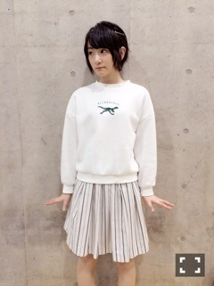
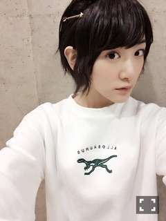
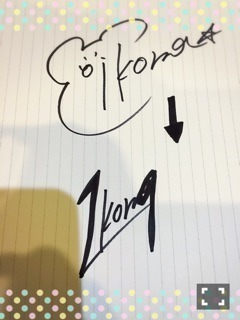

| 2016/01 30 Sat | 食べ過ぎの毎日(ฅ ・ω・☆) |
最近、珍しくめちゃめちゃ食べてます生駒里奈です

マネージャーさんに２０歳から体質変わるんだから気をつけなさいと言われましたが夜ごはんにお母さんの手作りチャーハンとヒレカツとささみ肉揚げたやつとドーナツペロリと平らげました

今日は東京ビッグサイトにて個別握手会がありましたヽ(・∀・)ノ
ほとんどの方が初めましてさんでびっくりしました！
有り難いです
常連さんもありがとうございます〜ヽ(・∀・)ノ

今日のお洋服
ほわいと


お気に入りのダイナソートレーナーヽ(・∀・)ノ
ここで皆さんにお知らせです⭐️
生駒ちゃんサイン変えましたヽ(・∀・)ノ
理由は大人になったから、サインもちょいとかっこよくしたくて、

上が昔ので、
下が新しいサインですヽ(・∀・)ノ
19と言う数字が好きなので入れてみましたヽ(・∀・)ノ
よろぴくぴく〜
です！
あとヽ(・∀・)ノ
今夜ついにうまズキッ！に出演しますヽ(・∀・)ノ
２０歳になった証拠だね！
競馬について超初心者の生駒ちゃんに先輩方が競馬を教えてくださいました〜⭐️
皆さん要チェックですよ〜ヽ(・∀・)ノ
あともうひとつヽ(・∀・)ノ
明日21:00〜 行列のできる法律相談所
に出演致しまする〜！！
また呼んでいただけて感激です！
ふなっしーとひな壇に一緒に座れたのが嬉しかったな

フナノミクス頂きました⭐️⭐️
こうやってテレビに沢山出る機会が増えて嬉しいですが、逆に一個一個ちゃんと出来なければ次はないわけですから、
気を一層引き締めて頑張りますヽ(・∀・)ノ
ではっ
へばなっ☆彡
コメント(845)
2016/01/30 22:00